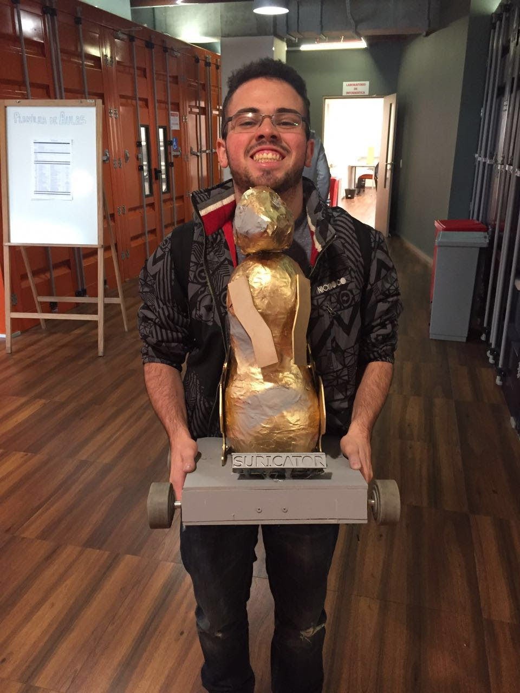

Suricator
Nome do projeto: Suricator
Data: 05 e 06/2016
Curso - Semestre: Natureza do Design/1ºSemestre
Categoria: Design Thinking
Documentação / Escrito Técnico / Escrita Científica: Não
Conteúdo Acadêmico presente: Design Thinking e Design Voltado para o Usuário.
Palavras-Chave: Design Thinking; Design Voltado para o Usuário; Eletrônica; Programação<
Descrição: Neste projeto, tinhamos o objetivo de criar um brinquedo para crianças entre 6 e 7 anos. Com a ajuda de um grupo de mais 4 pessoas, desenvolvemos um brinquedo que chamamos de Suricator. O Suricator em sua caracteristica principal era um robo que tinha um aspecto físico de um Suricato-robo. Na brincadeira, as crianças tinham ora que correr atrás do robo, ora fugir dele, para isso o robo andava em uma velocidade consideravel. Para que derrotassem o Suricator, as crianças tinham lasers em suas mãos e tinham de acertar alguns alvos ,com o laser, posicionados no robo. O robo so parava quando as luzes de seus olhos ficassem verdes. No processo, primeiramente, após desenvolvermos a idéia principal com o suporte do Design Thinking, um método de organização de pensamentos, prototipamos nosso projeto e apresentamos a uma criança a fim de que soubessemos se o brinquedo realmente era divertido e as melhorias necessárias. Após as melhorias, o grupo desenvolveu o produto final, e, para consolidação do sucesso do projeto, fomos a uma escola localizada em São Paulo, para que brincassemos diretamente com as crianças.
Relacionados: Mobilidade Urbana: Carros Inteligentes 